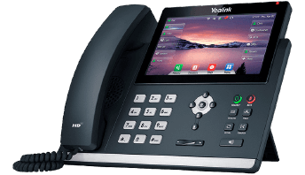
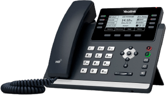
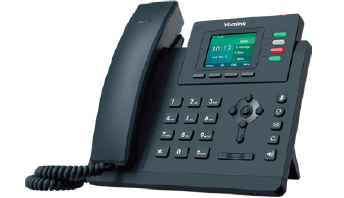
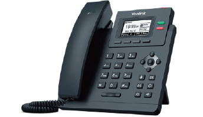
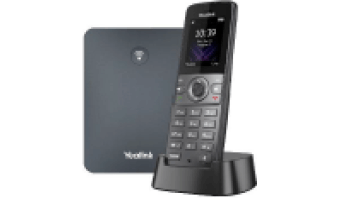
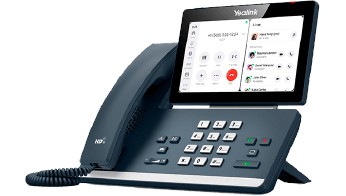
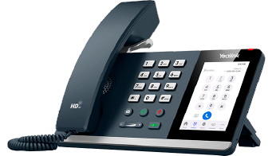
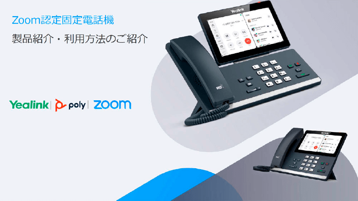

Zoom Video Communicationsが提供する
企業向けクラウド型電話サービス
従来の電話回線に代わるもので、
オフィスの卓上電話機はもちろん、
自宅のPCや外出先のスマホから会社の外線番号で
発着信することができます。

Zoom Phoneで課題解決!
営業部Aさんの場合
電話対応で
生産性が
上がらない!
代表番号のための電話番出社や、テレワークしている社員への電話の取り次ぎが煩雑など、テレワーク環境があるのに電話のためだけに出社をしている…。
どこからでも
外線番号で発着信！
自宅でも外出先でも、ZoomPhone ならPC やスマホから、どこにいてもオフィスと変わらない電話環境が利用可能。電話のためだけの出社がなくなり、生産性もアップ！お客さまとのコミュニケーションもスムーズに。

IT部門Bさんの場合
既存の番号・
設備は
替えたくない!
Zoom Phoneを利用したいけど、外線番号は変えたくない。既存のPBXもそのまま使えないかな…。
番号そのまま、
既存PBXも活用できます
既存PBXを活かしたまま、Zoom phoneのPBX（構内交換機）でビジネス電話システムの確立ができるので、Zoom phoneで既存の外線番号のまま発着信が可能です。
内勤業務Cさんの場合
従来、卓上電話機で
実施していた
運用を継続して
できるか不安
コスト削減のためにオフィスの電話機は減らしたいが、どうしても残しておかないといけない部署がある。
柔軟な導入・変更が
可能
Zoom認定電話機は発着信のみでなく、短縮ダイヤル、パーク保留などにも対応しています。またPHSの置き換えとしてZoom認定のDECTハンドセットもご用意しています。
どこからでも
外線番号で発着信！
自宅でも外出先でも、ZoomPhone ならPC やスマホから、どこにいてもオフィスと変わらない電話環境が利用可能。電話のためだけの出社がなくなり、生産性もアップ！お客さまとのコミュニケーションもスムーズに。
番号そのまま、
既存PBXも活用できます
既存PBXを活かしたまま、Zoom phoneのPBX（構内交換機）でビジネス電話システムの確立ができるので、Zoom phoneで既存の外線番号のまま発着信が可能です。
柔軟な導入・変更が
可能
Zoom認定電話機は発着信のみでなく、短縮ダイヤル、パーク保留などにも対応しています。またPHSの置き換えとしてZoom認定のDECTハンドセットもご用意しています。
Zoom 認定 デスクトップ電話機
Yealink T3 / T4シリーズ（IP電話機） |
 SIP-T48U |
 SIP-T46U |
 SIP-T43U |
 SIP-T33G |
 SIP-T31P |
 W73P（DECT） |
|
|---|---|---|---|---|---|---|---|
| 想定利用シーン | 執務用 | 受付／執務用 | 受付／執務用 | 受付/執務用 | 受付／執務用 | 店舗・工場用 | |
| 内蔵WiFi機能 | × | × | × | × | × | × | |
| 回線キー | 表示可能な回線キー数 | 29 | 10 | 8 | 4 | 2 | - |
| サポートする回線キー数 | - | 27 | 21 | 12 | - | - | |
| ディスプレイ | タッチディスプレイ対応 | ○ | × | × | × | × | × |
| サイズ | 7インチ | 4.3インチ | 3.7インチ | 2.4インチ | 2.3インチ | - | |
| カラー表示対応 | ○ | ○ | × | ○ | × | × | |
| 表示画面(UI) | SIP電話機 | SIP電話機 | SIP電話機 | SIP電話機 | SIP電話機 | SIP電話機 | |
| 電源供給 | PoE対応 | ○ | ○ | ○ | ○ | ○ | ○ |
| 内蔵Blutooth機能 | × | × | × | × | × | × | |
| 日本語入力・表示 | 表示のみ（入力不可） | 表示のみ（入力不可） | 表示のみ（入力不可） | 表示のみ（入力不可） | 表示のみ（入力不可） | 表示のみ（入力不可） | |
| 短縮ダイヤル数 | - | - | - | - | - | 8 | |
| データシート | ダウンロード | ダウンロード | ダウンロード | ダウンロード | ダウンロード | ダウンロード | |
{kind=link}
{kind=link}
{kind=link}
{kind=link}
{kind=link}
Yealink MPシリーズ（Zoomアプライアンス電話機） |
 MP58-Zoom |
 MP56-Zoom |
 MP54-Zoom |
|
|---|---|---|---|---|
| 想定利用シーン | 執務／役員用 | 執務／役員用 | 執務用 | |
| 内蔵WiFi機能 | ○ | ○ | × | |
| 回線キー | 表示可能な回線キー数 | - | - | - |
| サポートする回線キー数 | - | - | - | |
| ディスプレイ | タッチディスプレイ対応 | ○ | ○ | ○ |
| サイズ | 7インチ | 7インチ | 4インチ | |
| カラー表示対応 | ○ | ○ | ○ | |
| 表示画面(UI) | Zoom | Zoom | Zoom | |
| 電源供給 | PoE対応 | ○ | ○ | ○ |
| 内蔵Blutooth機能 | ○ | ○ | ○ | |
| 日本語入力・表示 | 表示のみ（入力不可） | 表示のみ（入力不可） | 表示のみ（入力不可） | |
| 短縮ダイヤル数 | - | - | - | |
| データシート | ダウンロード | ダウンロード | ダウンロード | |
{kind=link}
{kind=link}
CCXシリーズ
- タッチディスプレイ
- WiFi対応
カラータッチスクリーンを備え、直感的な操作が可能なビジネスメディアデスクトップ電話機。

Edgeシリーズ
- カラーディスプレイ
- WiFi対応
Polyの定評ある音声とスタイリッシュなデザインを兼ね備え、耐久性に優れた機能豊富なデスクトップ電話機。
ROVEシリーズ
- 防水防塵
- 小型軽量
安全性の高いDECT™暗号化を使用した拡張性の高いハンドセットとベースのソリューション。Rove30/40は防塵・防水性能を備えています。
選ばれる理由
Zoom認定電話機の導入は
住友商事マシネックスに
お任せください!
住友商事マシネックスはMicrosoft Teams / Zoomを柱とするユニファイドコミュニケーションのトータルソリューションをご提供しています。お客様のニーズに応じた各種ハードウェアとソフトウェアのご提供を通じて、最適なユニファイドコミュニケーション環境を実現し、お客様のビジネス強化に貢献します。
- Microsoft Teams / Zoomを柱とするUCソリューションを提供
- BYOC環境で利用するZoom認定VoIPゲートウェイのディストリビューター
- 導入目的・利用シーンに応じて最適な製品のご提案
- Zoom電話環境の周辺機器（IP電話機・ヘッドセット）多数メーカーの取り扱い
- 導入後も安心のサポート体制
- PoCも可能。ご利用しながらご検討いただけます
よくあるご質問
Zoom認定固定電話機の検証機の貸出は行っていますか？
無償で2週間の貸出が可能でございます。
返却時の送料のみ発送元負担でお願いしております。
貸出に関しては弊社の問い合わせ窓口からお問合せください。
購入したい場合は、どうすれば良いですか？
弊社の問い合わせ窓口からお問合せいただき、担当者から後日ご連絡致します。
利用方法を教えてください
Zoom社のサポートから、デバイスの追加方法をご確認下さい。
電話とデバイスの管理 - カスタマーサポート (zoom.com)
電話機のデバイスからの漢字入力は対応していますか
T3/T4シリーズ、MPシリーズ、W73Pのいずれも対応しておりません。
資料ダウンロード
Zoom認定固定電話機
製品紹介・利用方法のご紹介
Yealink、Poly、各メーカーのZoom認定固定電話機のご紹介や電話機選定のポイントを解説しています。ZoomPhoneの導入をご検討のお客様におすすめです。
ウェブからのお問い合わせ
デモ・トライアルのご相談
サービスのご導入・ご検討にあたりご質問がございましたら、お気軽にご相談ください。また、デモ・トライアルのご相談についてもこちらからお申込みいただけます。